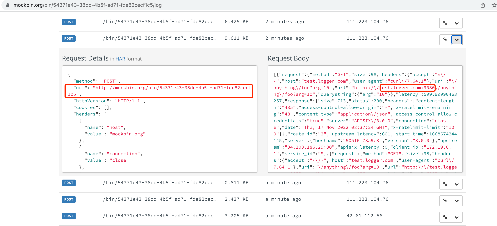
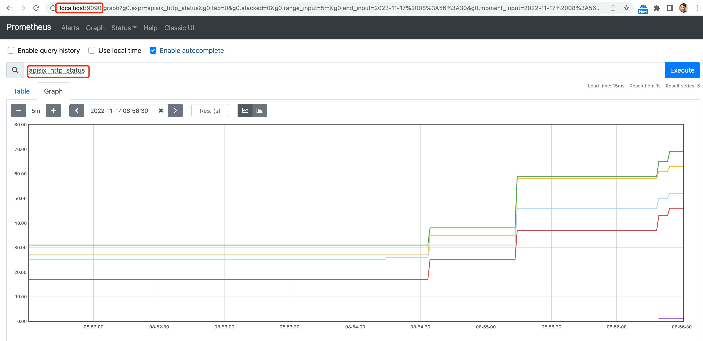
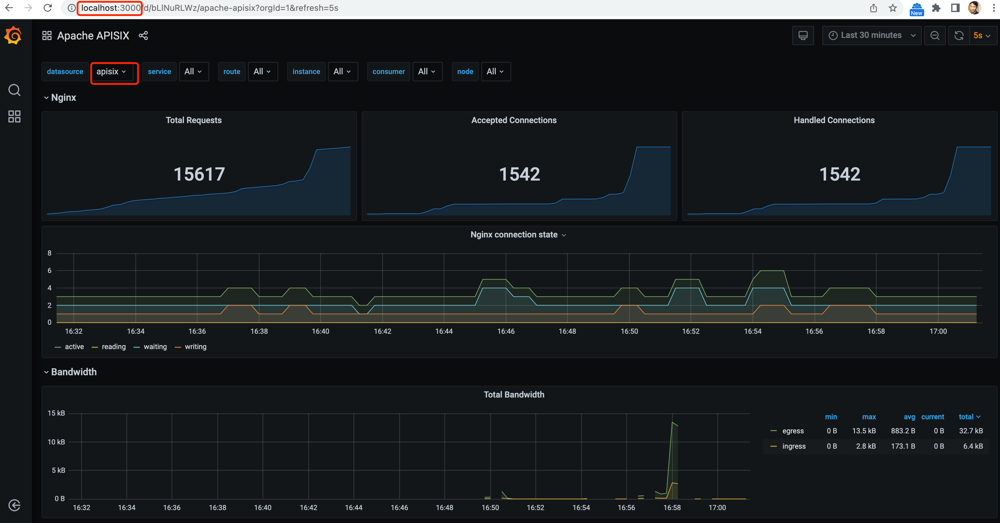

git clone https://github.com/apache/apisix-docker.git
cd apisix-docker/example
$ docker-compose -p docker-apisix up -d
Starting docker-apisix_web2_1 ... done
Starting docker-apisix_etcd_1 ... done
Starting docker-apisix_web1_1 ... done
Starting docker-apisix_apisix-dashboard_1 ... done
Starting docker-apisix_grafana_1 ... done
Starting docker-apisix_prometheus_1 ... done
Starting docker-apisix_apisix_1 ... done
docker run -d -p 9411:9411 openzipkin/zipkinAPI Gateway
Table of Contents
APISIX
Install
Install via Docker
Review the forwarded port
$ docker ps
CONTAINER ID IMAGE COMMAND CREATED STATUS PORTS NAMES
505f0f78a9e3 apache/apisix:3.0.0-debian "/docker-entrypoint.…" 7 hours ago Up About a minute 0.0.0.0:9080->9080/tcp, 0.0.0.0:9091-9092->9091-9092/tcp, 0.0.0.0:9180->9180/tcp, 0.0.0.0:9443->9443/tcp docker-apisix_apisix_1
a63ab0371486 grafana/grafana:7.3.7 "/run.sh" 7 hours ago Up About a minute 0.0.0.0:3000->3000/tcp docker-apisix_grafana_1
5a55bc3db0d3 nginx:1.19.0-alpine "/docker-entrypoint.…" 7 hours ago Up About a minute 0.0.0.0:9081->80/tcp docker-apisix_web1_1
92593051ed37 prom/prometheus:v2.25.0 "/bin/prometheus --c…" 7 hours ago Up About a minute 0.0.0.0:9090->9090/tcp docker-apisix_prometheus_1
2614d1ecab09 nginx:1.19.0-alpine "/docker-entrypoint.…" 7 hours ago Up About a minute 0.0.0.0:9082->80/tcp docker-apisix_web2_1
89eedf60d85c apache/apisix-dashboard:2.13-alpine "/usr/local/apisix-d…" 7 hours ago Up About a minute 0.0.0.0:9000->9000/tcp docker-apisix_apisix-dashboard_1
121cd74f273d bitnami/etcd:3.4.15 "/opt/bitnami/script…" 7 hours ago Up About a minute 0.0.0.0:2379->2379/tcp, 2380/tcp docker-apisix_etcd_1| PORT | NOTE |
|---|---|
2379 |
etcd |
9000 |
dashboard |
9081 |
Web 1 |
9082 |
Web 2 |
3000 |
grafana |
9090 |
prometheus |
9180 |
Admin API |
9080 |
|
9091-9092 |
|
9443 |
*Check the services/routes/updateam
$ for i in services routes upstreams ; do curl "http://127.0.0.1:9180/apisix/admin/$i/" -H 'X-API-KEY: edd1c9f034335f136f87ad84b625c8f1' ; done
{"list":[],"total":0}
{"list":[],"total":0}
{"list":[],"total":0}Login into dashboard
Login into dashboard via http://localhost:9000/, use admin as username, admin as password.
Expose API
1. Create upstream
curl "http://127.0.0.1:9180/apisix/admin/upstreams/1" -H "X-API-KEY: edd1c9f034335f136f87ad84b625c8f1" -X PUT -d '
{
"type": "roundrobin",
"nodes": {
"httpbin.org:80": 1
}
}'The following API can be used to query/delete upstream:
-
Query: curl -s "http://127.0.0.1:9180/apisix/admin/upstreams/1" -H "X-API-KEY: edd1c9f034335f136f87ad84b625c8f1"
-
Delete: curl "http://127.0.0.1:9180/apisix/admin/upstreams/1" -H "X-API-KEY: edd1c9f034335f136f87ad84b625c8f1" -X DELETE
2. Create Route
curl "http://127.0.0.1:9180/apisix/admin/routes/1" -H "X-API-KEY: edd1c9f034335f136f87ad84b625c8f1" -X PUT -d '
{
"methods": ["GET"],
"host": "example.com",
"uri": "/anything/*",
"upstream_id": "1"
}'The following API can be used to query/delete routes:
-
Query: curl "http://127.0.0.1:9180/apisix/admin/routes/1" -H "X-API-KEY: edd1c9f034335f136f87ad84b625c8f1"
-
Delete: curl "http://127.0.0.1:9180/apisix/admin/routes/1" -H "X-API-KEY: edd1c9f034335f136f87ad84b625c8f1" -X DELETE
3. Test
curl -i -X GET "http://127.0.0.1:9080/anything/foo?arg=10" -H "Host: example.com"Protect API
1. Create Route with rate limit
curl -i http://127.0.0.1:9180/apisix/admin/routes/2 -H 'X-API-KEY: edd1c9f034335f136f87ad84b625c8f1' -X PUT -d '
{
"uri": "/anything/*",
"plugins": {
"limit-count": {
"count": 2,
"time_window": 60,
"rejected_code": 503,
"key_type": "var",
"key": "remote_addr"
}
},
"upstream_id": "1"
}'2. Test
$ for i in {1..3} ; do curl -I -X GET "http://127.0.0.1:9080/anything/foo?arg=10" ; done
HTTP/1.1 200 OK
Content-Type: application/json
Content-Length: 417
Connection: keep-alive
X-RateLimit-Limit: 2
X-RateLimit-Remaining: 1
Date: Thu, 17 Nov 2022 08:17:53 GMT
Access-Control-Allow-Origin: *
Access-Control-Allow-Credentials: true
Server: APISIX/3.0.0
HTTP/1.1 200 OK
Content-Type: application/json
Content-Length: 417
Connection: keep-alive
X-RateLimit-Limit: 2
X-RateLimit-Remaining: 0
Date: Thu, 17 Nov 2022 08:17:55 GMT
Access-Control-Allow-Origin: *
Access-Control-Allow-Credentials: true
Server: APISIX/3.0.0
HTTP/1.1 503 Service Temporarily Unavailable
Date: Thu, 17 Nov 2022 08:17:55 GMT
Content-Type: text/html; charset=utf-8
Content-Length: 269
Connection: keep-alive
Server: APISIX/3.0.0|
Note
|
Due to exceed the max limit count of 2 request in 1 minutes, the 3rd request get 503. |
Observe API
Log
1. Create Route
curl http://127.0.0.1:9180/apisix/admin/routes/2 -H 'X-API-KEY: edd1c9f034335f136f87ad84b625c8f1' -X PUT -d '
{
"plugins": {
"http-logger": {
"uri": "http://mockbin.org/bin/54371e43-38dd-4b5f-ad71-fde82cecf1c5"
},
"limit-count": {
"count": 100,
"time_window": 60,
"rejected_code": 503,
"key_type": "var",
"key": "remote_addr"
}
},
"upstream_id": "1",
"uri": "/anything/*"
}'2. Make some test
for i in {1..100} ; do curl -I -X GET "http://127.0.0.1:9080/anything/foo?arg=10" -H "Host: test.logger.com" ; done3. Check from http logger

Prometheus
1. Create Route
curl http://127.0.0.1:9180/apisix/admin/routes/2 -H 'X-API-KEY: edd1c9f034335f136f87ad84b625c8f1' -X PUT -d '
{
"plugins": {
"prometheus": {},
"http-logger": {
"uri": "http://mockbin.org/bin/54371e43-38dd-4b5f-ad71-fde82cecf1c5"
},
"limit-count": {
"count": 100,
"time_window": 60,
"rejected_code": 503,
"key_type": "var",
"key": "remote_addr"
}
},
"upstream_id": "1",
"uri": "/anything/*"
}'2. Make some test
for i in {1..100} ; do curl -I -X GET "http://127.0.0.1:9080/anything/foo?arg=10" ; done3. Check the Prometheus

Grafana
1. Make some test
for i in {1..100} ; do curl -I -X GET "http://127.0.0.1:9080/anything/foo?arg=10" ; done2. Review Grafana Dashboard

Zipkin
1. Create Route
curl http://127.0.0.1:9180/apisix/admin/routes/2 -H 'X-API-KEY: edd1c9f034335f136f87ad84b625c8f1' -X PUT -d '
{
"plugins": {
"zipkin": {
"endpoint": "http://127.0.0.1:9411/api/v2/spans",
"sample_ratio": 1
},
"prometheus": {},
"http-logger": {
"uri": "http://mockbin.org/bin/54371e43-38dd-4b5f-ad71-fde82cecf1c5"
},
"limit-count": {
"count": 100,
"time_window": 60,
"rejected_code": 503,
"key_type": "var",
"key": "remote_addr"
}
},
"upstream_id": "1",
"uri": "/anything/*"
}'2. Make one test
$ curl -s http://127.0.0.1:9080/anything/foo?arg=10 | jq
{
"args": {
"arg": "10"
},
"data": "",
"files": {},
"form": {},
"headers": {
"Accept": "*/*",
"Host": "127.0.0.1",
"User-Agent": "curl/7.64.1",
"X-Amzn-Trace-Id": "Root=1-6375fb9e-160ed73c536682a8569a564b",
"X-B3-Parentspanid": "57f5548509edb515",
"X-B3-Sampled": "1",
"X-B3-Spanid": "4eb94314ed6669e1",
"X-B3-Traceid": "da48ba8d025ce51281056f7d958cfae4",
"X-Forwarded-Host": "127.0.0.1"
},
"json": null,
"method": "GET",
"origin": "172.19.0.1, 111.223.104.76",
"url": "http://127.0.0.1/anything/foo?arg=10"
}|
Note
|
X-B3-Parentspanid, X-B3-Sampled, X-B3-Spanid, X-B3-Traceid be appened to HTTP Headers.
|
3 Check with the Zipkin
Login into http://127.0.0.1:9411/zipkin/ for tracing via either X-B3-Traceid, or others.
Cache API responses
1. Create Route
curl http://127.0.0.1:9180/apisix/admin/routes/2 -H 'X-API-KEY: edd1c9f034335f136f87ad84b625c8f1' -X PUT -d '
{
"plugins": {
"proxy-cache": {
"cache_key": [
"$uri",
"-cache-id"
],
"cache_bypass": [
"$arg_bypass"
],
"cache_method": [
"GET"
],
"cache_http_status": [
200
],
"hide_cache_headers": true,
"no_cache": [
"$arg_test"
]
},
"zipkin": {
"endpoint": "http://127.0.0.1:9411/api/v2/spans",
"sample_ratio": 1
},
"prometheus": {},
"http-logger": {
"uri": "http://mockbin.org/bin/54371e43-38dd-4b5f-ad71-fde82cecf1c5"
},
"limit-count": {
"count": 100,
"time_window": 60,
"rejected_code": 503,
"key_type": "var",
"key": "remote_addr"
}
},
"upstream_id": "1",
"uri": "/anything/*"
}'2. Test Response Cache
$ for i in {1..3} ; do sleep 0.5 ; curl -I -X GET "http://127.0.0.1:9080/anything/foo?arg=10" ; done
HTTP/1.1 200 OK
Content-Type: application/json
Content-Length: 588
Connection: keep-alive
X-RateLimit-Limit: 100
X-RateLimit-Remaining: 99
Date: Thu, 17 Nov 2022 10:24:58 GMT
Access-Control-Allow-Origin: *
Access-Control-Allow-Credentials: true
Server: APISIX/3.0.0
Apisix-Cache-Status: MISS
HTTP/1.1 200 OK
Content-Type: application/json
Content-Length: 588
Connection: keep-alive
X-RateLimit-Limit: 100
X-RateLimit-Remaining: 98
Date: Thu, 17 Nov 2022 10:24:58 GMT
Access-Control-Allow-Origin: *
Access-Control-Allow-Credentials: true
Server: APISIX/3.0.0
Apisix-Cache-Status: HIT
HTTP/1.1 200 OK
Content-Type: application/json
Content-Length: 588
Connection: keep-alive
X-RateLimit-Limit: 100
X-RateLimit-Remaining: 97
Date: Thu, 17 Nov 2022 10:24:58 GMT
Access-Control-Allow-Origin: *
Access-Control-Allow-Credentials: true
Server: APISIX/3.0.0
Apisix-Cache-Status: HIT|
Note
|
Refer to Response Header Apisix-Cache-Status, the 1st response is MISS, the 2nd and 3rd response is HIT.
|
TODO
TODO